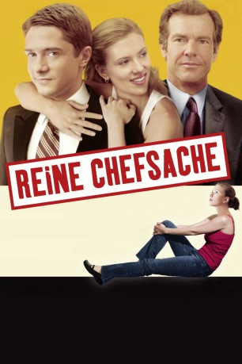

IMDB-Wertung: 6.5 / 10
IMDB-Wertung: 6.5 / 10  Metascore:
Metascore: 
Dan Foremans Leben gerät aus den Fugen, als ihm seine Frau eröffnet, er werde mit 52 noch einmal Vater, er einen neuen 26jährigen Chef bekommt und dieser auch noch eine Affäre mit seiner Tochter beginnt.
Alternativ: In Good Company
 IMDB-Wertung: 6.5 / 10 Metascore:
Dan Foremans Leben gerät aus den Fugen, als ihm seine Frau eröffnet, er werde mit 52 noch einmal Vater, er einen neuen 26jährigen Chef bekommt und dieser auch noch eine Affäre mit seiner Tochter beginnt.
Jahr: 2004
Dauer: 109 Minuten
FSK: 0
Land: USA Studio: UniversalTonspuren: DTS - ,
Untertitel:
Auflösung: 1080p (1920x1040) Größe: 9451 MB
Regisseur: Paul Weitz
Drehbuch: Paul Weitz
Soundtrack:
Darsteller:
 Dennis Quaid als Dan
Dennis Quaid als Dan Topher Grace als Carter
Topher Grace als Carter Scarlett Johansson als Alex
Scarlett Johansson als Alex Marg Helgenberger als Ann
Marg Helgenberger als Ann David Paymer als Morty
David Paymer als Morty Clark Gregg als Steckle
Clark Gregg als Steckle Philip Baker Hall als Eugene Kalb
Philip Baker Hall als Eugene Kalb Selma Blair als Kimberly
Selma Blair als Kimberly Frankie Faison als Corwin
Frankie Faison als Corwin Ty Burrell als Enrique Colon
Ty Burrell als Enrique Colon Kevin Chapman als Lou
Kevin Chapman als Lou Amy Aquino als Alicia
Amy Aquino als Alicia Colleen Camp als Receptionist
Colleen Camp als Receptionist Lauren Tom als Obstetrician
Lauren Tom als Obstetrician Ron Bottitta als Porsche Dealer
Ron Bottitta als Porsche Dealer John Cho als Petey
John Cho als Petey Mobin Khan als Salesman
Mobin Khan als Salesman Ted Hollis als Party Guest , uncredited
Ted Hollis als Party Guest , uncredited Malcolm McDowell als Teddy K - Globecom CEO , uncredited
Malcolm McDowell als Teddy K - Globecom CEO , uncreditedDatei: X:\2004(N-Z)\Reine Chefsache (2004, FSK0, 1920x1040).mkv seit 21.09.2017
Festplatte: HD 2003-2004-2005(A-F)
 Es gibt insgesamt 54 Filme in der Gruppe '2004(N-Z)'
Es gibt insgesamt 54 Filme in der Gruppe '2004(N-Z)'